A splendid train journey north and we arrive in Alleppey (Alappuzha), a pleasant market town surrounded by coconut plantations and built on the canals that service the coir industry of the backwaters. We find the usual mix of stalls selling fruit, vegetables, pots and pans and even a coffin shop plus the obligatory mounds of rubbish being picked at by crows. !
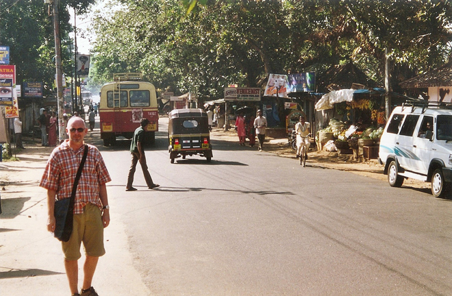
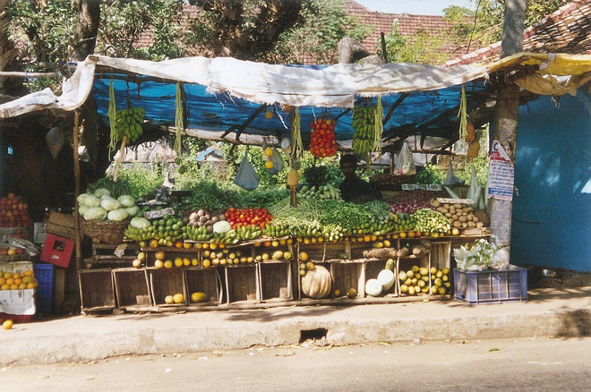
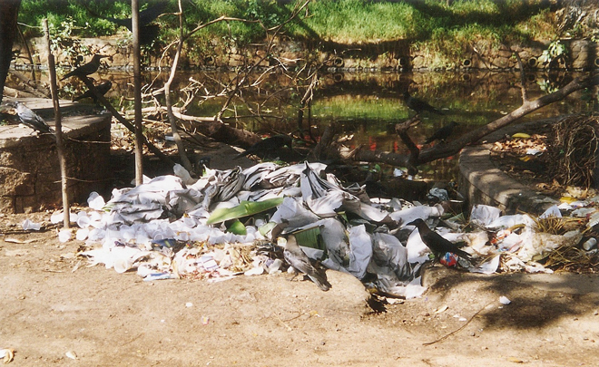
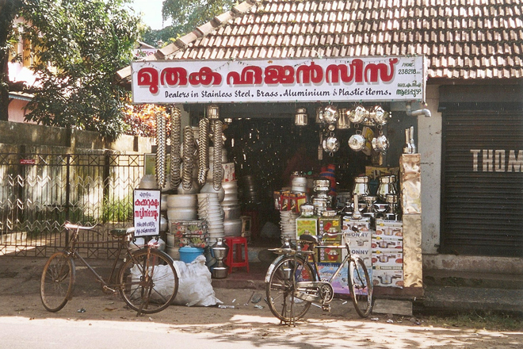
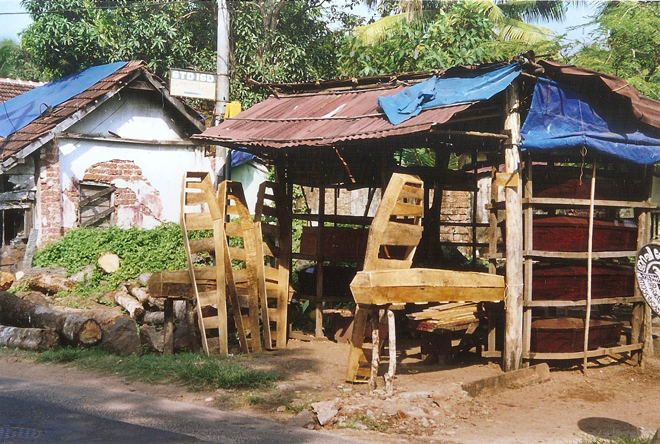
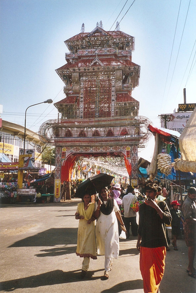
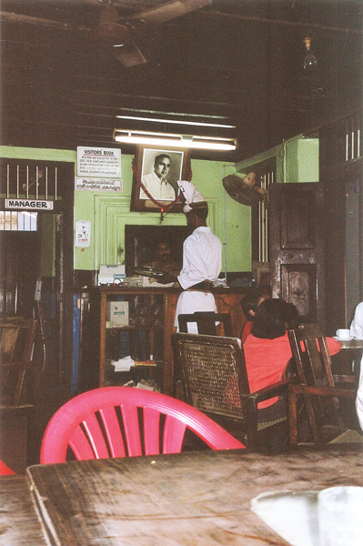
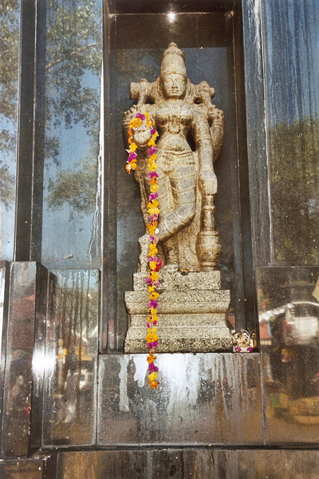
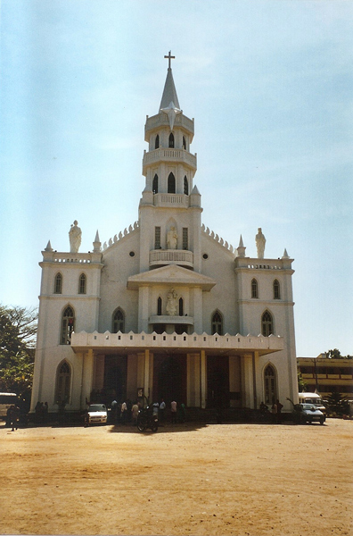
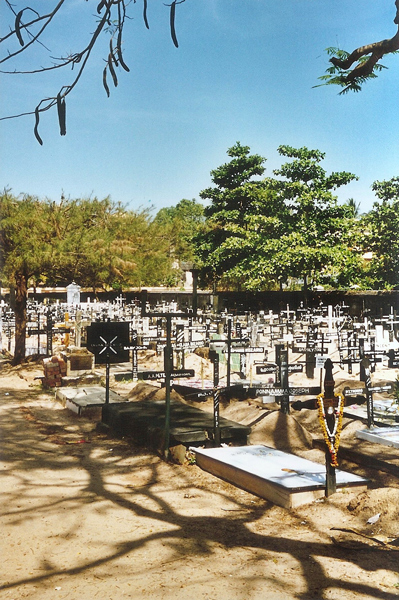
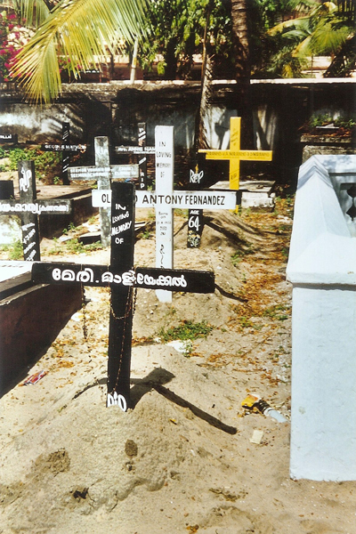
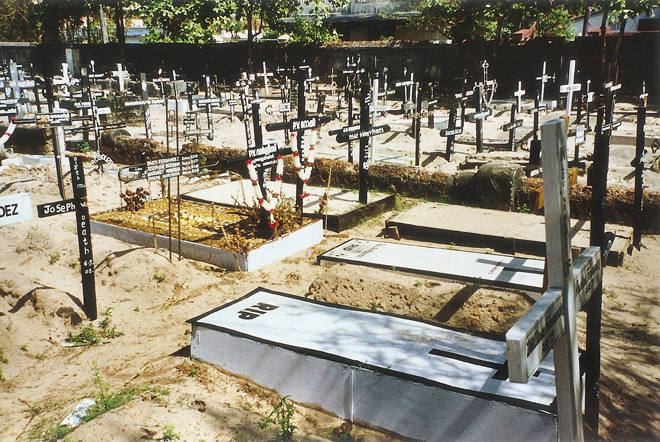
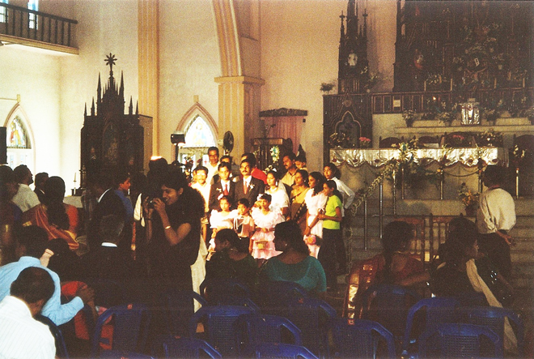
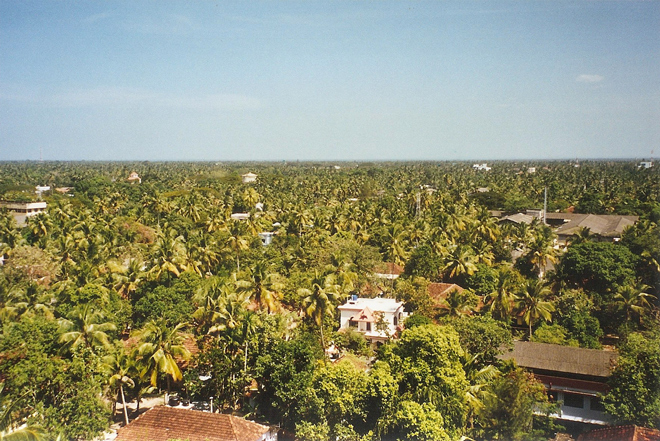
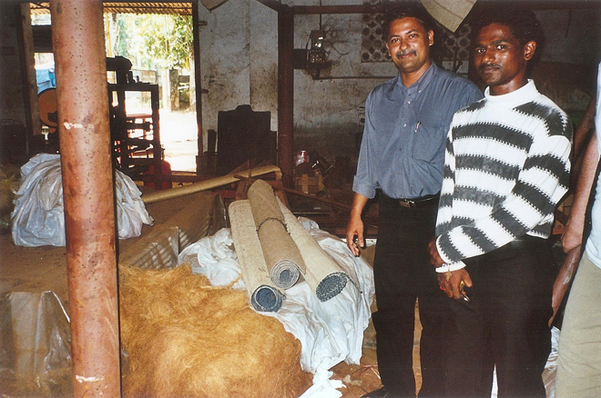
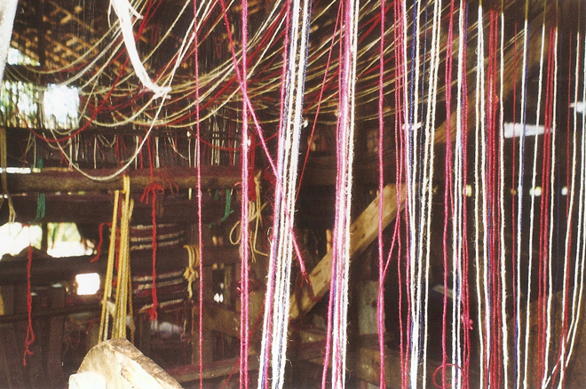
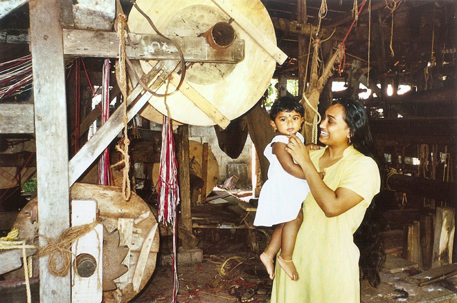
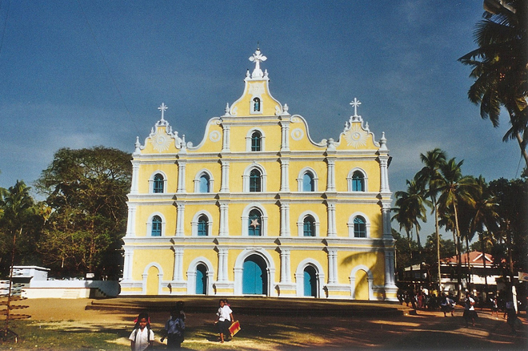
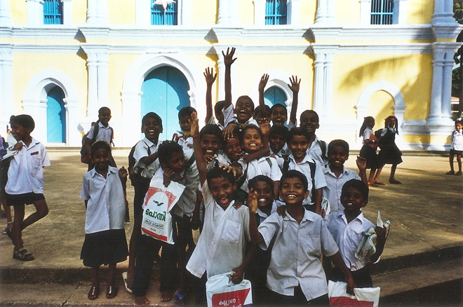
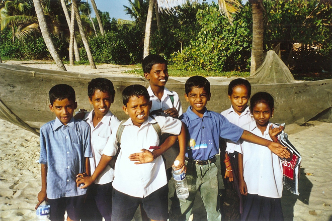
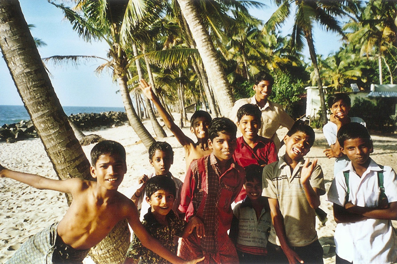
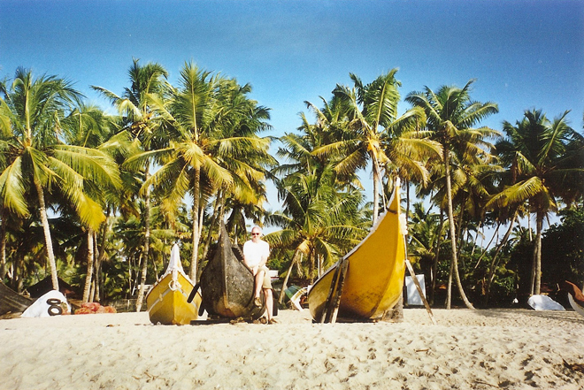
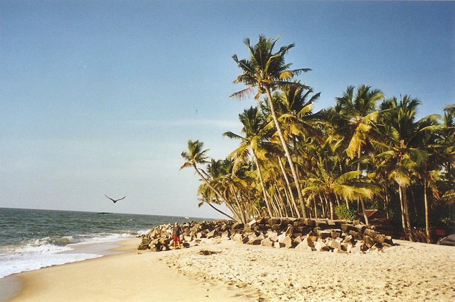
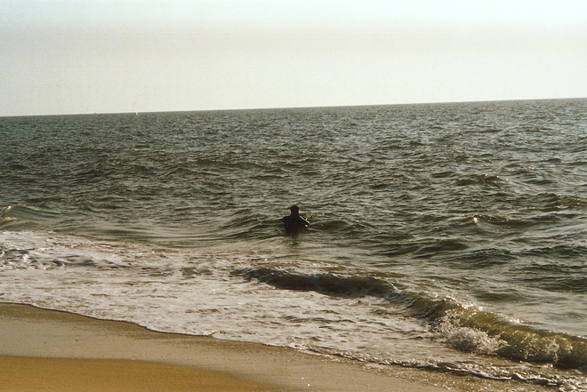
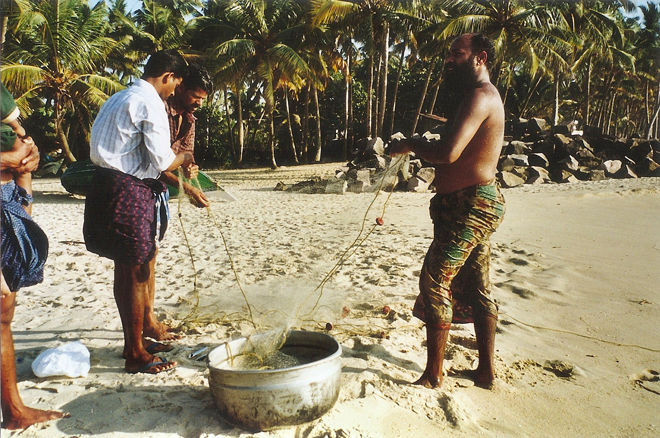
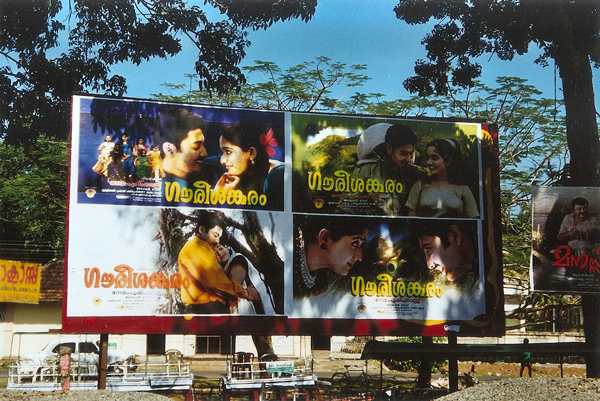
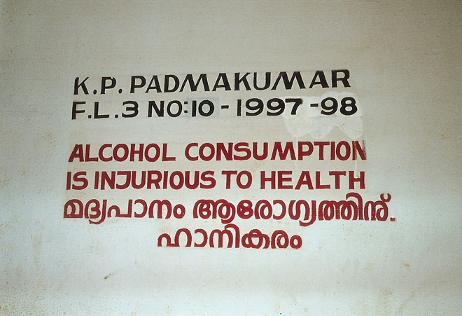
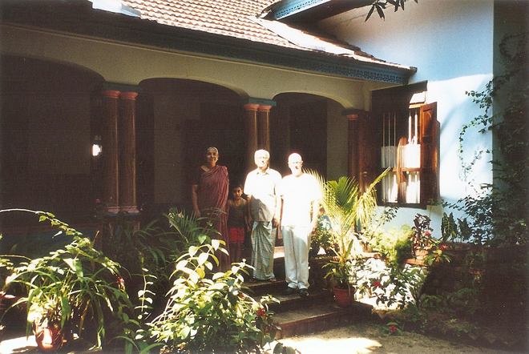